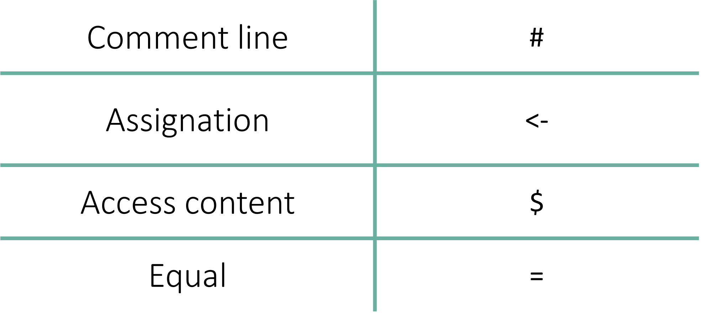

# The convention is to use left hand assignation
var1 <- "hello world"
var1[1] "hello world"Syntax operators are the specialized symbols and keywords that define how R interprets your code. They handle essential tasks like naming objects, writing notes to yourself, and digging into complex datasets.
It includes comment line, assignation, access content, and equal.

Assignment is the process of storing a value (data) inside a named container (an object).
The standard way to assign values in R is using the <- operator. Think of it as an arrow pointing from the data to the label.
# The convention is to use left hand assignation
var1 <- "hello world"
var1[1] "hello world"Shortcut for <-
Instead of typing two characters, use these shortcuts to insert the assignment arrow:
Mac: Option + - (minus key)
Windows: Alt + - (minus key)
A Note on Coding Style: To Space or Not to Space?
While var1<-“hello world” works, it is a little bit “dirty” and hard to read.
Following the Tidyverse Style Guide, you should always put a space before and after the assignment operator: var1 <- "hello world"
While = works for assignment, R users generally avoid it. In R, = is typically reserved for defining arguments inside a function. Using it for general assignment is considered poor style.
# It is also possible to use the '=' sign, but is NOT a good practice
var1 = "hello world"
var1[1] "hello world"You can technically point the arrow the other way: "data" -> var1.
This is rarely used but can be helpful at the end of a long pipe (|>) if you decide to save the final result into a new variable.
"hello world" -> var1
var1[1] "hello world"Once you have stored data in a variable, there are several ways to “call” it back to the console:
Simply type the name. This is the most common method during interactive analysis.
"hello world!"[1] "hello world!"print(): Explicitly prints the object. This is often used inside “loops” or complex functions where R might not automatically show the output.
cat(): Short for “concatenate.” It prints the raw text without the [1] index marker or quotes. It is great for creating clean, human-readable messages.
var1 <- "McGill"
print(var1)[1] "McGill"var1 <- "McGill"
cat(var1)McGillThe $ operator is one of the most powerful symbols in R. It allows you to “reach inside” a complex object (like a Data Frame or a List) and extract a specific column or element by its name.
Example: The iris Dataset
The iris dataset is a built-in collection of measurements for 150 flowers. It includes variables like Sepal.Length, Petal.Length, and Species. To look at only the species column, we use the $ operator.
# Show the first 6 rows of the dataset
head(iris) Sepal.Length Sepal.Width Petal.Length Petal.Width Species
1 5.1 3.5 1.4 0.2 setosa
2 4.9 3.0 1.4 0.2 setosa
3 4.7 3.2 1.3 0.2 setosa
4 4.6 3.1 1.5 0.2 setosa
5 5.0 3.6 1.4 0.2 setosa
6 5.4 3.9 1.7 0.4 setosa# Extract only the "Species" column
iris$Species [1] setosa setosa setosa setosa setosa setosa
[7] setosa setosa setosa setosa setosa setosa
[13] setosa setosa setosa setosa setosa setosa
[19] setosa setosa setosa setosa setosa setosa
[25] setosa setosa setosa setosa setosa setosa
[31] setosa setosa setosa setosa setosa setosa
[37] setosa setosa setosa setosa setosa setosa
[43] setosa setosa setosa setosa setosa setosa
[49] setosa setosa versicolor versicolor versicolor versicolor
[55] versicolor versicolor versicolor versicolor versicolor versicolor
[61] versicolor versicolor versicolor versicolor versicolor versicolor
[67] versicolor versicolor versicolor versicolor versicolor versicolor
[73] versicolor versicolor versicolor versicolor versicolor versicolor
[79] versicolor versicolor versicolor versicolor versicolor versicolor
[85] versicolor versicolor versicolor versicolor versicolor versicolor
[91] versicolor versicolor versicolor versicolor versicolor versicolor
[97] versicolor versicolor versicolor versicolor virginica virginica
[103] virginica virginica virginica virginica virginica virginica
[109] virginica virginica virginica virginica virginica virginica
[115] virginica virginica virginica virginica virginica virginica
[121] virginica virginica virginica virginica virginica virginica
[127] virginica virginica virginica virginica virginica virginica
[133] virginica virginica virginica virginica virginica virginica
[139] virginica virginica virginica virginica virginica virginica
[145] virginica virginica virginica virginica virginica virginica
Levels: setosa versicolor virginicaThe head() Function
The head() function is a “quick look” tool. It returns the first few rows of a dataset (default is 6) so you can inspect your data without flooding your console with thousands of lines.
Conversely, tail() shows you the last few rows.
Remember, you can always type ?head in your Console to see the full documentation.
In R, the single equals sign (=) has two primary roles, but they are not created equal.
While = can be used to assign a value to a variable, R users generally avoid this. In the R community, using = for assignment is considered poor style because it can be confused with mathematical equality or function arguments.
Always prefer <- for creating variables.
# It is also possible to use the '=' sign, but is NOT a good practice
var1 = "hello world"
var1[1] "hello world"The “correct” and most common use of the = sign in R is to define arguments inside a function. This tells the function exactly how you want it to behave.
Example: The paste() Function
The paste() function joins multiple pieces of text together. It uses an argument called sep to decide what character should go between the pieces.
cal <- 1 + 3
# Using '=' to define the separator argument
paste("The output of 1 + 3", cal,
sep = " = ")[1] "The output of 1 + 3 = 4"Deep Dive: ?paste
If you look at the help documentation for paste(), you will see the usage and arguments explanations:
Usage
paste(…, sep = ” “, collapse = NULL)
Arguments
sep: a character string to separate the terms.
By using sep = ” = “, we are overriding the default space (” “) and telling R to put an equals sign between our text and our result.
1. Comments (
#): Writing Notes to Your Future SelfComments are used to explain why you wrote a specific line of code. This is vital for reproducibility and collaboration. Anything written after the
#symbol is ignored by R during execution.#before your note.Cmd + Shift + CCtrl + Shift + CThe shortcut is “smart.” If you highlight ten lines of code and hit the shortcut, it will comment out all ten lines at once. Hit it again to “uncomment” them.
It doesn’t matter how many
#symbols you use.R simply looks for the first one on a line and ignores everything to the right of it. You are free to use multiple hashtags to create visual hierarchy in your script:
Best Practices for Commenting
Don’t explain “What”: R (and yourself) knows what the code is doing.
# Adding 1 to xExplain “Why”: Explain the scientific logic.
# Adjusting for batch effectUse them as “Bookmarks”: Use long lines of hashtags to separate your “Loading Data” section from your “Plotting” section.